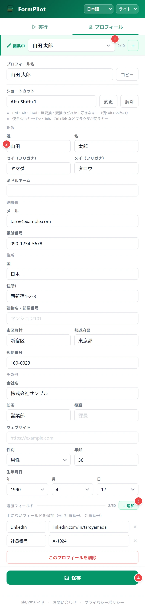
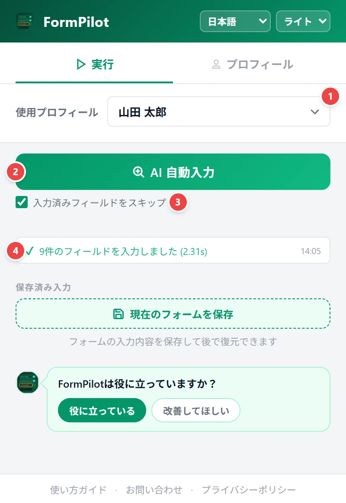
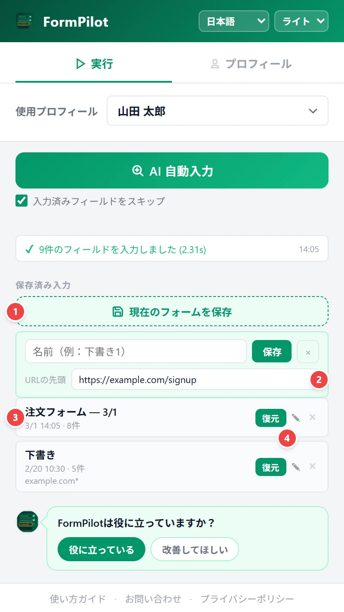
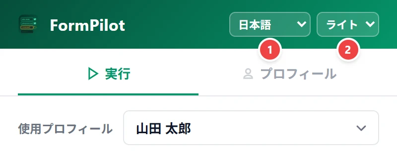
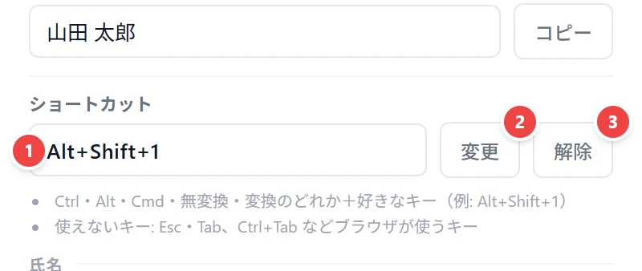

FormPilotの各機能を、実際の操作画面で解説します。

自動入力に使う情報をプロフィールとして登録します。一度保存すれば、あらゆるフォームで使い回せます。

フォームがあるページを開いた状態で、以下の操作を行います。
AIに送信されるのはフォームの構造情報（ラベルや属性）のみです。個人情報は送信されません。

フォームに入力した内容を保存しておき、次にそのページを開いたときにワンクリックで復元できます。
1サイトあたり最大20件、合計50サイトまで保存できます。上限を超えると古いものから自動で削除されます。

ポップアップの右上にある2つのセレクターで、言語とテーマを切り替えられます。
ポップアップを開かなくても、ページ上の右クリック（コンテキスト）メニューから自動入力と復元を実行できます。
実行状況やエラーはページ右上の通知で表示されます。「入力済みフィールドをスキップ」はポップアップでの設定が使われます。プロフィールが未入力のうちは「AI 自動入力 — まずプロフィールを登録」が表示され、クリックすると「プロフィール」タブが開きます。

プロフィールごとにショートカットキーを割り当てられます。フォームのあるページでそのキーを押すと、ポップアップを開かずにそのプロフィールでAI自動入力を実行します。
Esc・Tab と、Ctrl+Tab・Ctrl+T などブラウザが先に処理するキーは使えません。同じ組み合わせは1つのプロフィールにだけ登録できます。Ctrl+C など多くのサイトが使う組み合わせは、注意を表示したうえで登録します。Chrome 自体のページと Chrome ウェブストアでは動きません。